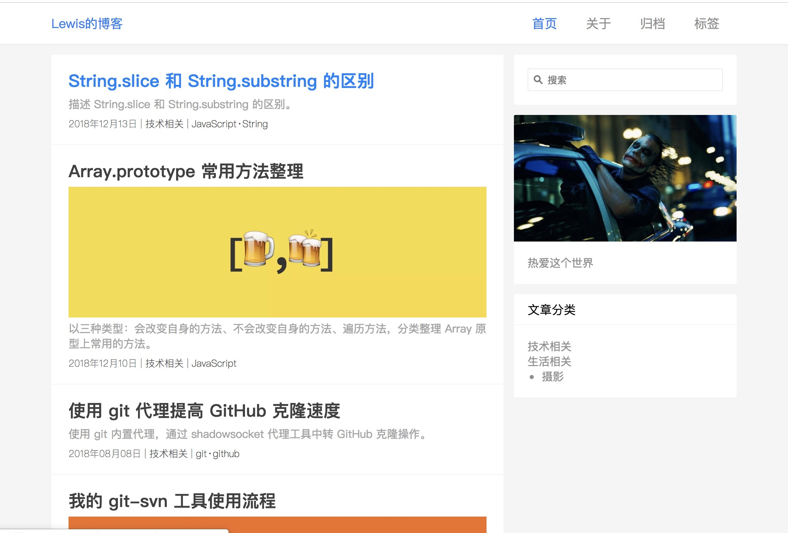

傻瓜式搭建个人博客
因为上传到简书的部分言（造）论（福）反（网）动（友）的文章被封了，所以决定自己搭建一个个人博客，你还来封我呀嘻嘻。话不多说、车门焊死、准备发车！
哦对，先上几个图激励一下自己才行，搭建好了以后是这样的，这是几个主题可以看一下

是不是还不错，接下来就开始。。。盘它！
我的系统是macOS，但是Windows的也没什么差别
1、在GitHub创建仓库
首先要在GitHub上创建一个存放你的代码的仓库，这个仓库名，就是你的域名了，所以 起名字的时候可能要慎重一点，毕竟域名叫aaa好像一点排面都没有==
创建GitHub账户
创建账户就很简单的，按照他的提示一步一步来就好了
配置自己的私钥加入到GitHub
Step 1 检查有没有本机的SSH密钥
检查~/.ssh看看是否有名为
id_rsa.pub和id_dsa.pub的2个文件1
2
3$ cd
$ cd ~/.ssh
$ ls如果没有 step2、如果有 step3
Step 2 创建一个新的SSH密钥
1
2
3
4
5
6$ cd
$ ssh-keygen -t rsa -C "your_email@youremail.com"
# 一路回车不输入密码，当然密码看你个人想不想设置拉
检查是不是生成了
$ cd ~/.ssh
$ lsStep3 添加公钥到GitHub
1
2
3$ cat ~/.ssh/id_rsa.pub
ssh-rsa AAAAB3NzaC1ysevsevsc2EAAAADAQABAAAevBAQDKdvdevssfckjevkevekvekyuviosevsscevuo sevcsevsevsevevwovjsvbsihvpsebvdvGj5g8sKuhCYu9AvUb4FTDQauna6hGKw7qK8r1WKKHUmzIXltc8cosDcp2dfaYA3DYNY4M/aNR5byt6ZaKsJHcMl2btJ9yLSjNGtd6DJZwefQig0C6lMo4EmQStbVSTRWuJkV2p1MouwPJWGIwGn4kLRZO8iParPNWMQg+RqOzLVDzypv6y+m05yfRdHsgWIDJIPZ0WLmNG7 nensvrvrvsn@163.com右上角头像下拉三角框 –> settings –> SSH and GPG keys –> New SSH key
然后你复制上面的公钥内容，粘贴进“Key”文本域内。 title域，自己随便起个名字。
1
2$ ssh -T git@github.com # 验证这个key是不是好用
Hi 你的GitHub名称! You've successfully authenticated, but GitHub does not provide shell access.创建仓库
repostories –> new
Repository name 这个就关系到自己的域名了，写好之后 点create repostory就可以了
点创建以后会出现。
git@github.com:XXXXX/aaa.git
等下会用到
创建仓库完成！
2、安装Hexo
Hexo 是一个快速、简洁且高效的博客框架。Hexo 使用 Markdown（或其他渲染引擎）解析文章，在几秒内，即可利用靓丽的主题生成静态网页。
安装前提
安装 Hexo 相当简单。然而在安装前，您必须检查电脑中是否已安装下列应用程序
如果没有安装 emmmm
安装Git
1
$ brew install git // 安装Git
安装Nodejs
1
2
3
4
5$ brew install nvm
$ mkdir ~/.nvm
$ export NVM_DIR=~/.nvm
$ . $(brew --prefix nvm)/nvm.sh
$ nvm install 7安装Hexo
如果您的电脑中已经安装上述必备程序，接下来只需要使用 npm 即可完成 Hexo 的安装.
以上安装都要安装完成后菜能安装Hexo哦
官方文档没有sudo。但是尝试后。会出现各种问题。。。
1
$ sudo npm install hexo-cli -g
至此工具安装完成！可以开始写博客上传了！
3、写博客发布
用Hexo初始化自己的博客，更改自定义的配置，设置自己的主题，写一篇博客练练手，推送到自己的Github
Hexo初始化博客
1
2
3
4$ mkdir MyBlog # 创建一个空文件夹
$ cd MyBlog
$ hexo init XXXblog # Hexo初始化一个文件夹 最好起一个不会撞的名字吧
$ cd XXXblog安装主题
Hexo有很多主题可以选择。
主题可以自己去Hexo选择，将next替换一下就可以
1
$ git clone https://github.com/iissnan/hexo-theme-next themes/next # 安装一个主题
配置
在IDE中把这个项目打开，修改配置文件
username.github.io/
_config.yml修改配置。更多配置主要的几个：
title：博客名称
language：语言 zh-Hans
最重要的！
1
2
3deploy:
type: git
repo: emmm 创建仓库以后蹦出来的那一个，没错 粘过来本地测试
他本来就有一个HelloWorld.md。 我们可以先不写 借用他这个
哦对 写文章是在source/_post下写
启动测试服务，4000端口 在浏览器中输入127.0.0.1：4000就可以看到了
$ hexo s
安装hexo-deployer-git自动部署发布工具
$ npm install hexo-deployer-git –save
推送到GitHub
$ hexo clean && hexo g && hexo d
每次写完博客后，输入这个命令，就自动生成了静态网页并上传到GitHub了
最后 在浏览器里输入网址 这个网址在_config.yaml自己配置， 就能够访问了
emmmmm刚接触只搭了一个最简单的网站，关于Hexo还有许多功能，比如评论啊之类的，欢迎大家积极研究 可以为所欲为了！